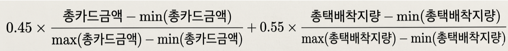
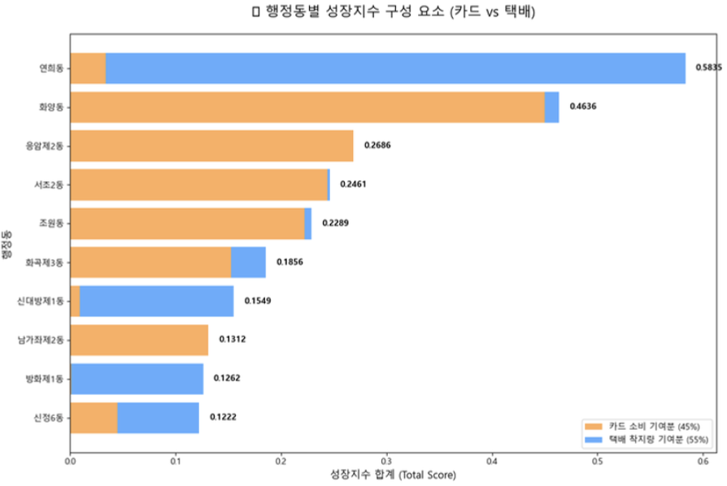

<meta charset="utf-8">
<meta name="viewport" content="width=device-width, initial-scale=1">
<title>Min Chanhong — Data &amp; AI</title>
<link rel="preconnect" href="https://fonts.googleapis.com">
<link rel="preconnect" href="https://fonts.gstatic.com" crossorigin>
<link href="https://fonts.googleapis.com/css2?family=Inter:wght@400;500;600;700&display=swap" rel="stylesheet">
<style>
:root{
  --ink:#1d1d1f;
  --mid-gray:#707070;
  --deep-gray:#474747;
  --hairline:#d6d6d6;
  --canvas:#f5f5f7;
  --paper:#ffffff;
  --cool-wash:#e8e8ed;
  --faded-surface:#fafafc;
  --quiet-dot:#777779;
  --blue:#0071e3;
  --link-blue:#0066cc;
  --ember:#b64400;

  --r-cards:28px; --r-links:10px; --r-badges:36px;
  --r-buttons:980px; --r-small-buttons:999px;

  --ease:cubic-bezier(.16,.84,.44,1);
  --page-max:1200px;
  --section-gap:clamp(64px,10vw,120px);
}
*{box-sizing:border-box;margin:0;padding:0}
html{scroll-behavior:smooth}
body{background:var(--paper);color:var(--ink);
  font-family:'Inter',-apple-system,BlinkMacSystemFont,'Malgun Gothic','Apple SD Gothic Neo',sans-serif;
  -webkit-font-smoothing:antialiased}
img{display:block;max-width:100%}
a{color:inherit;text-decoration:none}

.wrap{max-width:var(--page-max);margin:0 auto;padding-inline:clamp(20px,5vw,80px)}
.band{padding-block:var(--section-gap)}
.band-canvas{background:var(--canvas)}
.numr{font-feature-settings:"numr"}

/* ---- type scale (fluid, ratios preserve the documented line-heights) ---- */
.t-display   {font-weight:700;font-size:clamp(2.75rem,9vw,6rem);   line-height:1.0417; letter-spacing:-1.44px}
.t-heading-lg{font-weight:600;font-size:clamp(2.25rem,7vw,5rem);   line-height:1.05;   letter-spacing:-1.2px}
.t-heading   {font-weight:600;font-size:clamp(1.75rem,4.5vw,3.5rem);line-height:1.0714;letter-spacing:-0.28px}
.t-heading-sm{font-weight:600;font-size:clamp(1.5rem,3vw,2.5rem);  line-height:1.2}
.t-subheading{font-weight:600;font-size:clamp(1.25rem,2.2vw,2rem);line-height:1.125;  letter-spacing:0.128px}
.t-body-lg   {font-weight:400;font-size:1.75rem;line-height:1.1429;letter-spacing:0.196px}
.t-body      {font-weight:400;font-size:1.3125rem;line-height:1.381;letter-spacing:0.231px}
.t-body-sm   {font-weight:400;font-size:1.0625rem;line-height:1.4706;letter-spacing:-0.374px}
.t-caption   {font-weight:400;font-size:.875rem;line-height:1.2857;letter-spacing:-0.224px}
.t-micro     {font-weight:400;font-size:.75rem; line-height:1.3333;letter-spacing:-0.12px}

.ink{color:var(--ink)} .mid{color:var(--mid-gray)} .deep{color:var(--deep-gray)}
.center{text-align:center}

/* Apple headlines can center; body copy stays left-aligned */
p{max-width:64ch}

/* ---- entry: fade + translateY(16px→0), 420ms ease-out ---- */
.rise{opacity:0;transform:translateY(16px);
  transition:opacity .42s var(--ease),transform .42s var(--ease)}
.rise.in{opacity:1;transform:none}
@media (prefers-reduced-motion:reduce){
  .rise{opacity:1;transform:none;transition:none}
  html{scroll-behavior:auto}
}

/* ---- global nav: 44px sticky, blur on scroll ---- */
nav{position:sticky;top:0;z-index:100;height:44px;
  background:rgba(255,255,255,.8);backdrop-filter:blur(20px);-webkit-backdrop-filter:blur(20px);
  transition:background .3s var(--ease)}
nav.scrolled{background:rgba(250,250,252,.92)}
nav .wrap{height:44px;display:flex;align-items:center;gap:clamp(12px,3vw,32px)}
nav .logo{font-weight:600;font-size:.8125rem;letter-spacing:-0.12px;white-space:nowrap;color:var(--ink)}
nav ul{margin-left:auto;display:flex;gap:clamp(10px,2vw,24px);list-style:none}
nav ul a{font-size:.75rem;color:var(--ink);padding-bottom:2px;
  border-bottom:1px solid transparent;transition:border-color .2s var(--ease),color .2s var(--ease)}
nav ul a:hover{color:var(--mid-gray)}
nav ul a.active{border-bottom-color:var(--ink)}

/* ---- buttons ---- */
.btn{display:inline-block;font-size:1.0625rem;font-weight:400;
  transition:background .2s var(--ease),opacity .2s var(--ease),transform .2s var(--ease)}
.btn-filled{border-radius:var(--r-buttons);background:var(--blue);color:#fff;
  padding:11px 16px}
.btn-filled:hover{background:#0077ed}
.btn-filled:active{transform:scale(.98)}
.btn-ghost{border-radius:var(--r-small-buttons);border:1px solid rgba(0,0,0,.8);
  color:var(--ink);padding:11px 16px}
.btn-ghost:hover{background:var(--cool-wash)}
.btn-link{color:var(--link-blue);font-size:1.0625rem}
.btn-link:hover{text-decoration:underline}
.btn-link::after{content:' \2192'}

/* ---- hero (Product Hero pattern) ---- */
.hero{padding-block:64px 0;text-align:center}
.hero .eyebrow{font-size:1.0625rem;color:var(--ink);margin-bottom:8px}
.hero h1{margin-block:0 20px}
.hero .sub{color:var(--mid-gray);margin:16px auto 28px;max-width:44ch;text-align:left}
.hero figure{margin-top:52px}
.hero figure img{width:100%;max-width:640px;margin-inline:auto;
  aspect-ratio:4/5;object-fit:cover;object-position:top;border-radius:var(--r-cards)}

/* ---- section header (left-aligned label + supporting paragraph) ---- */
.head{margin-bottom:clamp(40px,6vw,72px)}
.head .eyebrow{color:var(--ink);margin-bottom:12px}
.head p{color:var(--mid-gray);margin-top:12px}

/* ---- fact list (definition rows, hairline dividers) ---- */
.facts{display:grid;grid-template-columns:1fr 1fr;gap:0 clamp(24px,5vw,64px)}
.facts dl{display:grid;grid-template-columns:7.5rem 1fr}
.facts dt,.facts dd{padding-block:14px;border-top:1px solid var(--hairline)}
.facts dt{color:var(--mid-gray);font-size:.875rem}
.facts dd{font-size:1.0625rem}

/* ---- feature showcase rows: alternating text/image, cards ---- */
.feature{display:grid;grid-template-columns:1fr 1fr;gap:clamp(24px,5vw,64px);
  align-items:center;margin-bottom:clamp(24px,4vw,40px)}
.feature.flip .copy{order:2}
.feature .copy{background:var(--paper);border-radius:var(--r-cards);
  padding:clamp(24px,4vw,40px)}
.band-canvas .feature .copy{background:var(--paper)}
.feature .no{color:var(--mid-gray);font-size:.875rem;margin-bottom:8px}
.feature h3{margin-bottom:12px}
.feature p{color:var(--mid-gray)}
.feature .note{color:var(--mid-gray);font-size:.875rem;margin-top:16px}
.feature .visual{border-radius:var(--r-cards);overflow:hidden;background:var(--canvas)}
.feature .visual .pair{display:grid;grid-template-columns:1fr 1fr;gap:2px}
.feature .visual img{width:100%;height:100%;object-fit:cover;aspect-ratio:1/1}
.feature .visual.single img{aspect-ratio:16/11}

/* ---- skills / education card grid ---- */
.grid-3{display:grid;grid-template-columns:repeat(3,1fr);gap:20px}
.card{background:var(--paper);border-radius:var(--r-cards);padding:28px}
.band-canvas .card{background:var(--paper)}
.card .no{color:var(--mid-gray);font-size:.875rem;margin-bottom:16px}
.card h3{margin-bottom:8px}
.card .meta{color:var(--mid-gray);font-size:.875rem;margin-bottom:12px}
.card p{color:var(--mid-gray)}
.badge{display:inline-block;color:var(--ember);font-size:.75rem;font-weight:500;
  margin-bottom:8px}

/* ---- education accordion cards ---- */
.edu-card{background:var(--paper);border-radius:var(--r-cards);
  margin-bottom:20px;overflow:hidden}
.edu-card summary{display:flex;align-items:center;gap:20px;
  padding:28px;cursor:pointer;list-style:none}
.edu-card summary::-webkit-details-marker{display:none}
.edu-card summary:focus-visible{outline:2px solid var(--blue);outline-offset:-2px}
.edu-card .no{color:var(--mid-gray);font-size:.875rem;flex:none;width:1.5rem}
.edu-card .head-text{flex:1}
.edu-card h3{margin-bottom:4px}
.edu-card .meta{color:var(--mid-gray);font-size:.875rem}
.edu-card .chev{width:9px;height:9px;flex:none;
  border-right:1.5px solid var(--mid-gray);border-bottom:1.5px solid var(--mid-gray);
  transform:rotate(45deg);transition:transform .2s var(--ease)}
.edu-card[open] .chev{transform:rotate(-135deg)}
.edu-card .body{padding:0 28px 28px;color:var(--mid-gray)}
.edu-card .body dl{display:grid;grid-template-columns:8rem 1fr;margin-top:16px}
.edu-card .body dt,.edu-card .body dd{padding-block:10px;border-top:1px solid var(--hairline);
  font-size:.9375rem}
.edu-card .body dt{color:var(--mid-gray)}
.edu-card .body dd{color:var(--ink)}

/* ---- closing CTA band ---- */
.cta{text-align:center}
.cta h2{margin-bottom:20px}
.cta .contact-line{color:var(--mid-gray);margin:20px auto 0;font-size:1.0625rem}
.cta .contact-line a{color:var(--link-blue)}
.cta .contact-line a:hover{text-decoration:underline}

/* ---- footer legal block ---- */
footer{background:var(--canvas);padding-block:40px}
footer .wrap{display:flex;justify-content:space-between;gap:16px;flex-wrap:wrap;
  color:var(--mid-gray);font-size:.75rem;line-height:1.33}
footer a{color:var(--link-blue)}
footer a:hover{text-decoration:underline}

@media (max-width:734px){
  .facts,.feature,.grid-3{grid-template-columns:1fr}
  .feature.flip .copy{order:0}
  .facts dl{grid-template-columns:6rem 1fr}
  nav ul{gap:10px}
  nav ul a{font-size:.6875rem}
  .edu-card summary{gap:12px;padding:20px}
  .edu-card .body{padding:0 20px 20px}
  .edu-card .body dl{grid-template-columns:6rem 1fr}
}
</style>

<nav id="nav">
  <div class="wrap">
    <a class="logo" href="#top">Min Chanhong</a>
    <ul>
      <li><a href="#profile">Profile</a></li>
      <li><a href="#work">Work</a></li>
      <li><a href="#skills">Skills</a></li>
      <li><a href="#education">Education</a></li>
      <li><a href="#contact">Contact</a></li>
    </ul>
  </div>
</nav>

<!-- ============ HERO ============ -->
<header class="hero band" id="top">
  <div class="wrap">
    <p class="eyebrow t-body-sm rise">HNU AI DataScience Labs · 학부연구생</p>
    <h1 class="t-display ink rise">데이터로<br>도시를 읽습니다</h1>
    <p class="t-body sub rise">데이터 분석과 데이터 파이프라인 구축에 유능한 능력을 갖춘 인재입니다.
      빠른 적응력과 이해를 바탕으로 다양한 변수와 상황에 대처할 수 있습니다.</p>
    <a class="btn btn-filled rise" href="mailto:cksgdx@icloud.com">메일 보내기</a>
    <figure class="rise">
      
    </figure>
  </div>
</header>

<!-- ============ PROFILE ============ -->
<section id="profile" class="band band-canvas">
  <div class="wrap">
    <div class="head rise">
      <p class="eyebrow t-subheading">프로필</p>
      <p class="t-body">한남대학교 AI 데이터사이언스를 전공하고, 2026년 6월부터 박영호 교수 연구실에서
        학부연구생으로 있습니다. 주요 관심사 및 연구분야는 RAG, 비전처리, 웹개발입니다.</p>
    </div>
    <div class="facts">
      <dl class="rise">
        <dt>NAME</dt><dd>민찬홍 (Min Chanhong)</dd>
        <dt>MAJOR</dt><dd>한남대학교 AI 데이터사이언스</dd>
        <dt>TERM</dt><dd class="numr">2023.03 – 2029.02 (재학)</dd>
        <dt>LAB</dt><dd class="numr">박영호 교수 연구실 학부연구생 (2026.06 –)</dd>
      </dl>
      <dl class="rise">
        <dt>FOCUS</dt><dd>RAG · 비전처리 · 웹개발</dd>
        <dt>TOOLS</dt><dd>Python · R · SQL</dd>
        <dt>EMAIL</dt><dd><a class="btn-link" style="font-size:inherit" href="mailto:cksgdx@icloud.com">cksgdx@icloud.com</a></dd>
        <dt>PHONE</dt><dd class="numr">010-8690-2995</dd>
      </dl>
    </div>
  </div>
</section>

<!-- ============ WORK ============ -->
<section id="work" class="band">
  <div class="wrap">
    <div class="head rise">
      <p class="eyebrow t-subheading">서울 빅데이터 공모전 — GrowSeoul</p>
      <p class="t-body">서울시 카드 소비 데이터와 CJ대한통운 택배 물량 데이터를 결합해 연희동을
        잠재 상권으로 도출하고, 구독형 분석 플랫폼까지 설계한 작업입니다.
        <span class="numr">2026.03 – 2026.05.</span></p>
    </div>

    <div class="feature rise">
      <div class="copy">
        <p class="no numr">01</p>
        <h3 class="t-heading-sm">두 개의 데이터, 하나의 축</h3>
        <p class="t-body-sm">카드 소비 데이터와 택배 물량 데이터는 집계 단위가 서로 달랐습니다.
          행정동 코드를 기준으로 표준화하고 인코딩과 결측을 정리해 두 축을 같은 테이블 위에 올렸습니다.</p>
      </div>
      <div class="visual">
        <div class="pair">
          
          
        </div>
      </div>
    </div>

    <div class="feature flip rise">
      <div class="copy">
        <p class="no numr">02</p>
        <h3 class="t-heading-sm">전처리는 코드로 남긴다</h3>
        <p class="t-body-sm">행정동 코드 표준화, 인코딩 처리, 이상치 정리를 파이썬 스크립트로 작성해
          재실행 가능한 형태로 남겼습니다. 수작업 보정을 남기지 않는 것이 목표였습니다.</p>
      </div>
      <div class="visual single">
        
      </div>
    </div>

    <div class="feature rise">
      <div class="copy">
        <p class="no numr">03</p>
        <h3 class="t-heading-sm">성장 지수 0.45 : 0.55</h3>
        <p class="t-body-sm">소비 성장과 물류 성장을 0.45 대 0.55로 묶어 성장 지수를 정의하고,
          상위 행정동을 산점도와 순위표로 확인했습니다. 가중치는 근거를 붙였지만 여전히 설정값입니다.</p>
      </div>
      <div class="visual">
        <div class="pair">
          
          
        </div>
      </div>
    </div>

    <div class="feature flip rise">
      <div class="copy">
        <p class="no numr">04</p>
        <h3 class="t-heading-sm">지도 위에서 연희동</h3>
        <p class="t-body-sm">상위 행정동을 자치구 단위와 행정동 단위로 나누어 매핑했습니다. 연희동이
          기존 상권 분류에는 없지만 두 지표가 함께 오르는 구간에 있다는 점이 드러났습니다.</p>
      </div>
      <div class="visual">
        <div class="pair">
          
          
        </div>
      </div>
    </div>

    <div class="feature rise">
      <div class="copy">
        <p class="no numr">05</p>
        <h3 class="t-heading-sm">분석에서 서비스로</h3>
        <p class="t-body-sm">결과를 소상공인·프랜차이즈·지자체가 쓸 수 있는 구독형 플랫폼 GrowSeoul로
          설계했습니다. <span class="numr">Starter 29,000원, Pro 79,000원, Enterprise</span> 세 단계입니다.</p>
        <p class="note">한계 — 택배 데이터 노이즈 · 가중치의 주관성 · 생존 편향.
          다음은 회귀 분석과 머신러닝 기반 가중치 최적화입니다.</p>
      </div>
      <div class="visual">
        <div class="pair">
          
          
        </div>
      </div>
    </div>
  </div>
</section>

<!-- ============ SKILLS ============ -->
<section id="skills" class="band band-canvas">
  <div class="wrap">
    <div class="head rise">
      <p class="eyebrow t-subheading">다루는 것</p>
    </div>
    <div class="grid-3">
      <div class="card rise">
        <p class="no numr">01</p>
        <h3 class="t-subheading">Python</h3>
        <p class="meta">preprocessing · pandas</p>
        <p class="t-body-sm">인코딩 처리, 코드 체계 표준화, 결측과 이상치 정리까지 전처리
          파이프라인을 직접 씁니다.</p>
      </div>
      <div class="card rise">
        <p class="no numr">02</p>
        <h3 class="t-subheading">R</h3>
        <p class="meta">statistics · mapping</p>
        <p class="t-body-sm">통계 분석과 지도 시각화에 사용합니다. 행정 단위 분포와 지표 간
          관계를 확인합니다.</p>
      </div>
      <div class="card rise">
        <p class="no numr">03</p>
        <h3 class="t-subheading">SQL</h3>
        <p class="meta numr">4 weeks · 25 lessons / week</p>
        <p class="t-body-sm">SELECT 중심 부트캠프를 이수하고 HackerRank와 SolveSQL 문제로
          학습 내용을 검증했습니다.</p>
      </div>
      <div class="card rise">
        <span class="badge">진행중</span>
        <h3 class="t-subheading">RAG &amp; 비전처리</h3>
        <p class="meta">lab work</p>
        <p class="t-body-sm">연구실에서 진행 중인 주제입니다. 검색 증강 생성과 비전 모델을
          다루고 웹으로 옮깁니다.</p>
      </div>
    </div>
  </div>
</section>

<!-- ============ EDUCATION ============ -->
<section id="education" class="band">
  <div class="wrap">
    <div class="head rise">
      <p class="eyebrow t-subheading">과정</p>
    </div>

    <details class="edu-card rise">
      <summary>
        <p class="no numr">01</p>
        <div class="head-text">
          <h3 class="t-subheading">한남대학교 AI Bootcamp</h3>
          <p class="meta numr">2026.06.24 – 2026.08.13</p>
        </div>
        <span class="chev"></span>
      </summary>
      <div class="body">
        <p class="t-body-sm">교육부·한국무역협회(KITA) 주관 첨단산업 인재양성 부트캠프 AI 트랙입니다.
          중급 레벨에서 세 개 코스를 연속으로 이수했고, 과정 중 두 건의 팀 프로젝트를 수행했습니다.</p>
        <dl>
          <dt>PROGRAM</dt><dd>2026 첨단산업 인재양성 부트캠프 · AI 트랙</dd>
          <dt>HOST</dt><dd>교육부 · 한국무역협회(KITA)</dd>
          <dt>LEVEL</dt><dd>중급 (Intermediate)</dd>
          <dt>B1</dt><dd class="numr">2026.06.24 – 2026.07.03</dd>
          <dt>B2</dt><dd class="numr">2026.07.06 – 2026.07.16</dd>
          <dt>B3</dt><dd class="numr">2026.08.03 – 2026.08.13</dd>
        </dl>
      </div>
    </details>

    <details class="edu-card rise">
      <summary>
        <p class="no numr">02</p>
        <div class="head-text">
          <h3 class="t-subheading">SQL 데이터 캠프</h3>
          <p class="meta numr">2026.02.02 – 2026.02.28</p>
        </div>
        <span class="chev"></span>
      </summary>
      <div class="body">
        <p class="t-body-sm">4주 · 주당 25강 구성의 SELECT 중심 과정입니다. 강의만 듣고 끝내지
          않도록 HackerRank와 SolveSQL에서 외부 문제를 풀어 학습 내용을 따로 검증했습니다.</p>
        <dl>
          <dt>PERIOD</dt><dd class="numr">2026.02.02 – 2026.02.28 (4주)</dd>
          <dt>VOLUME</dt><dd class="numr">주당 25강</dd>
          <dt>SCOPE</dt><dd>SELECT 문 중심</dd>
          <dt>PROGRESS</dt><dd class="numr">진도 100% · 이해도 100% · 미션 25%</dd>
          <dt>VALIDATION</dt><dd>HackerRank · SolveSQL</dd>
        </dl>
      </div>
    </details>
  </div>
</section>

<!-- ============ CONTACT ============ -->
<section id="contact" class="band band-canvas cta">
  <div class="wrap">
    <p class="eyebrow t-body-sm rise">Contact</p>
    <h2 class="t-heading-lg ink rise">이야기할 준비가<br>되어 있습니다</h2>
    <a class="btn btn-filled rise" href="mailto:cksgdx@icloud.com">메일 보내기</a>
    <p class="contact-line rise">
      <a href="mailto:cksgdx@icloud.com">cksgdx@icloud.com</a>
      &nbsp;·&nbsp;<span class="numr">010-8690-2995</span>
    </p>
  </div>
</section>

<footer>
  <div class="wrap">
    <span>Min Chanhong — 한남대학교 AI 데이터사이언스</span>
    <span>© 2026 Min Chanhong. All rights reserved.</span>
  </div>
</footer>

<script>
// Entry cascade: fade + translateY(16px→0), 80ms stagger within a shared container.
const io = new IntersectionObserver((entries) => {
  entries.filter(e => e.isIntersecting).forEach((e, i) => {
    e.target.style.transitionDelay = `${i * 80}ms`;
    e.target.classList.add('in');
    io.unobserve(e.target);
  });
}, {rootMargin: '0px 0px -10% 0px'});
document.querySelectorAll('.rise').forEach(el => io.observe(el));

// Nav: frosted background once scrolled, active link tracks the section in view.
const navEl = document.getElementById('nav');
addEventListener('scroll', () => navEl.classList.toggle('scrolled', scrollY > 4), {passive:true});

const links = [...document.querySelectorAll('nav ul a')];
const spy = new IntersectionObserver((entries) => {
  entries.forEach(e => {
    if (!e.isIntersecting) return;
    links.forEach(a => a.classList.toggle('active', a.hash === '#' + e.target.id));
  });
}, {rootMargin: '-64px 0px -70% 0px'});
links.forEach(a => {
  const target = document.querySelector(a.hash);
  if (target) spy.observe(target);
});
</script>
